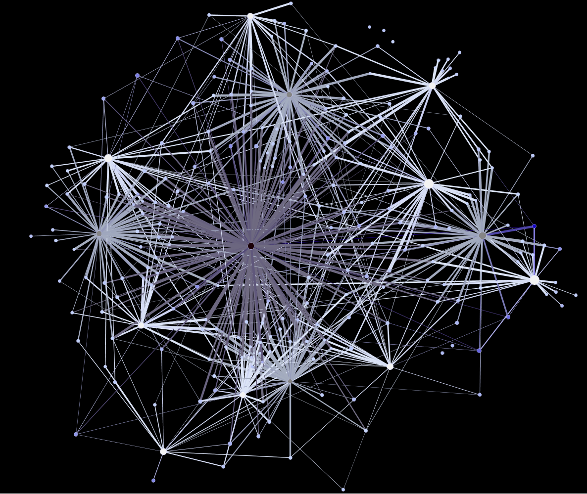
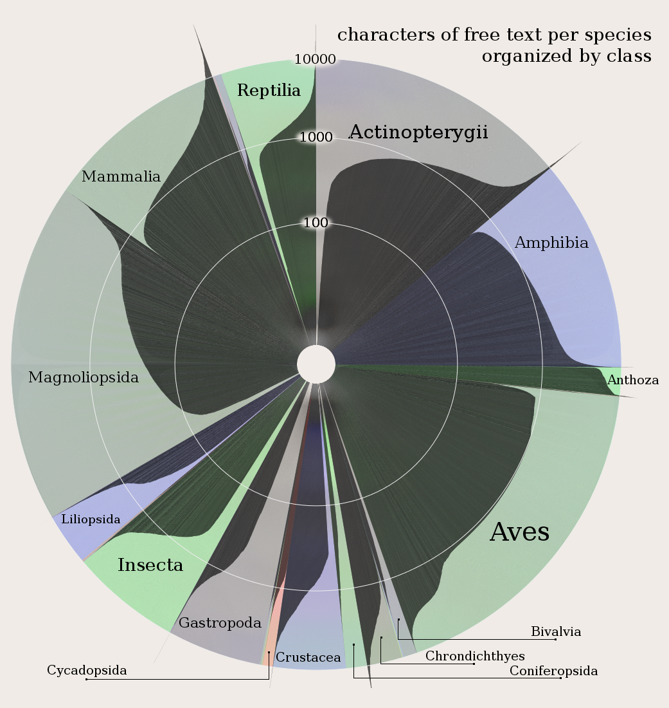
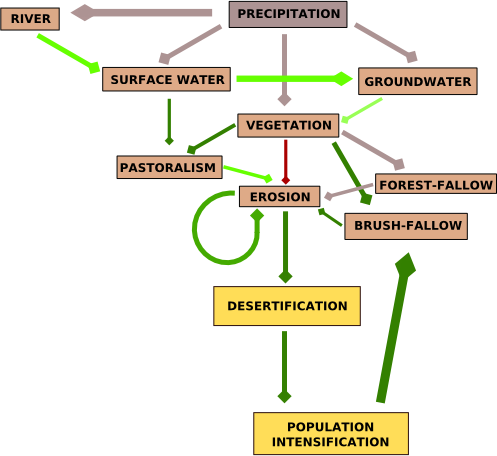

Melissa Terras’ recent visual summary of the Digital Humanities has brought attention to the growing vibrancy (and budgets) of the DH community. It also feeds the cycle of debate about the efficacy, role and usefulness of visual display of information, especially the aesthetically pleasing kind. Some scholars have responded with a criticism of the infographic as being misapplied or little more than a sales pitch. While popular conception of digital humanities work has data visualization featured prominently, within and outside the community the value of that work is widely debated.
Not so long ago, information visualization in the digital humanities rested firmly on the general principles of clarity and brevity typified by Edward Tufte and utilized not only in generic data visualization but also spatial data visualization.1 The problem with this conceptualization of information visualization is that works like Tufte’s are dominated by the expectation that such objects be immediately comprehensible to a lay audience. These are the infographics of such growing popularity and are meant for busy media consumers and executive summaries. Charlie Park, in an exploration of when to use a particular visual method known as a slopegraph, highlighted this issue in relation to Oliver Uberti’s use of a slopegraph to represent health care spending efficacy:
Uberti also gave some good reasons for drawing the graph the way he did originally, with his first point being that “many people have difficulty reading scatter plots. When we produce graphics for our magazine, we consider a wide audience, many of whose members are not versed in visualization techniques. For most people, it’s considerably easier to understand an upward or downward line than relative spatial positioning.”
I agree with him on that. Scatterplots reveal more data, and they reveal the relationships better (and Uberti’s scatterplot is really good, apart from a few quibbles I have about his legend placement). But scatterplots can be tricky to parse, especially for laymen.
It’s just this kind of assumption in visual representation of data that causes humanities scholars to critique digital humanities work and also prompts digital humanities scholars to defend themselves by excoriating the visual representation of knowledge. Michael Whitmore, in response to Stanley Fish’s recent bloviating, has echoed a common refrain against using information visualization as anything more than a helpful illustration or exploratory tool but ultimately separate and less valuable than the linear narrative explanation of the same phenomenon:
As traditionally trained humanities scholars who use computers to study Shakespeare’s genres, we have pointed out repeatedly that nothing in literary studies will be settled by an algorithm or visualization, however seductively colorful.
There’s a very real subset of digital humanities scholars who feel it necessary to maintain their bona fides with traditional scholars through the criticism of analytical and visual methods that they themselves use via language adopted from critics of the digital humanities as a whole. It’s a way to disarm a predictable critique brought on by the aesthetic appeal of data visualization and it’s rooted in a desire to have digital humanities scholarship treated as equal to traditional scholarship. I’ve often used the term “seductive” in my description of the various tools for analyzing and representing data and I’m also aware of the very many opaque or chaotic but impressive-looking representations of complex phenomena that are growing so popular today.

It may be that nothing in literary studies will be settled by an algorithm or visualization, but if so that may be a problem for us to solve rather than an inescapable truth of existence. Stepping away from algorithms and focusing on visual display of data reminds us that the lack of visual literacy necessitates that visual arguments cannot be sophisticated. Just like representations in National Geographic, data visualization in the digital humanities is heavily influenced by a bottom line focused on accessibility to a lay public and assumed unsophisticated audience with little time to examine the visual argument and less education in how to examine it. If we had same bottom line for linear narrative arguments, then it would be equally impossible for a journal article or monograph to “settle” anything in any field.To that end, I hope that the digital humanities can act as an impetus to demand better and more varied forms of literacy from our general academic (and by extension, public) audiences. The communication of information should not start by assuming poor visual literacy, network literacy and spatial literacy but rather should foster and demand increased levels of each. Along with turning the tables on the reader and placing an equal demand that they expend more effort to understand a non-narrative argument, we need to formalize principles of visual representation of knowledge through the development of serious standards for topics like network cartography and general visual literacy.
As it stands, a “good” visualization is one that is seductive, immediately comprehensible to a wide audience, requires little explanation and takes barely any time to absorb. These are, not coincidentally, the same standards one has for a good newspaper article. Another definition of good needs to be developed for sophisticated visual communication that gains its inspiration not from newspaper articles but from monographs and journal articles. This already exists for certain formalized visual expressions in particular domains, but the growing use of these methods for communicating knowledge among a larger scholarly and public community demands that we not create a few new jargons for a few new fields but forge a general literacy in the creation and appreciation of such communication.

I don’t want to lose track of another piece to this puzzle. It is particularly interesting that Whitmore includes the algorithm with the visualization, because algorithmic visualization using model builders is an allied subject matter. Algorithmic literacy is not a demand that everyone learn how to program, but another step in the development of higher standards for complex, modern communication.
The first step, I think, is to acknowledge a distinct category of data visualization for the sophisticated expression of complex phenomena that does not resemble the executive summaries and journalistic infographics commonly associated with data visualization. A simple Google Image Search of “mathematica” should give enough examples of just how complex visualizations can be. After that, it’s a matter of developing and formalizing standards for common visualization techniques by practitioners. My current work is with spatial data, which has a long tradition of developing just such standards, though representation of dynamic and interactive elements in spatial data, along with more complex spatial phenomena, still need effort. As a result, maps can be much more complex and sophisticated than network visualizations and general data visualizations, without much complaint about their communicative power. As network analysis and representation becomes more common (especially among humanists, who know that aesthetics and rhetoric are not actually bad words) we should strive to develop similar standards and expectations of literacy in relation to that and other forms of data visualization.
1 I suppose some people still call this cartography, but I think of cartographers to be somewhere with philologists and alchemists in the dustbin of historical professions. I kid, but for some reason the word feels so archaic, unless it’s used in conjunction with some unexpected modifier, like “network cartography” or “ludic cartography”, in which case it’s the archaism of cartography that draws light to the need to enjoin cartographic principles into the representation or analysis of spatial data in networks or games.